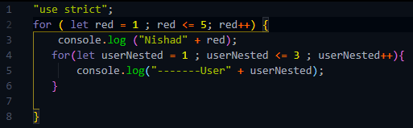
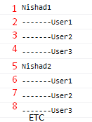

আমরা জানি যখন একই কাজ বার বার করার দরকার হয় তখন loop এর সাহায্যে তা করতে হয় ।
আর যখন একটা loop এর ভেতর আর কার অনেকবার করতে হয় তখনি এই Nested loop এর ব্যেবহার করতে হয় ।
জেমনঃ-
nested loop যেকোনো loop এর সাহায্যে করা যায় ।

এখানে 2 number লাইনের loop টা একটা সাধারণ loop এর নিয়মেই iteration শুরু করবে ।
প্রথমে 2 number লাইনের for loop initialistion এর কাজ করবে ।
তারপর true পেয়ে console.log রান করবে ।
তারপর 4 number লাইনের
nested , in , inner loop হিসেবে থাকা for loop রান হবে ।
তারপর nested loop প্রথমে userNested এর মধ্যে 1 store করবে ।
তারপর condition থেকে true পাবে তারপর
5 number লাইনের console.log রান করবে ।
তারপর inner loop এর stepping এর কাজ হবে তারপর inner loop er এর দ্বিতীয় iteration শুরু হবে এবং যেহেতু userNested = 2 তাই condition true পেয়ে আবার 5 number লাইনের console.log রান হবে ।
এখানে condition যেহেতু userNested <= 3 সেহেতু তৃতীয় loop টাও complete হবে ।
তারপর 4 number ,, iteration এর
ক্ষেত্রে condition ,, false হওয়াতে inner loop থেকে js বের হয়ে যাবে তারপর 2 number লাইনের console.log রান হবে
এবং outer loop এর দ্বিতীয় iteration এর কাজ শুরু হয়ে যাবে ।
এ ক্ষেত্রেও outer loop ,, condition true পাবে এবং console.log রান করবে এবং এবারো inner loop টা আগের মতই কাজ করবে ।
এভবে nested loop টা ততক্ষণ রান হবে যতক্ষণ outer loop এর condition true হয়ে iteration চলতে থাকবে ।
result:-

এখানে ক্রমিক নং দ্বারা চিহ্নিত করে দেওয়া হয়েছে প্রথম 2 টা iteration এর ক্ষেত্রে কোন output এর পর কোন output আসবে ।